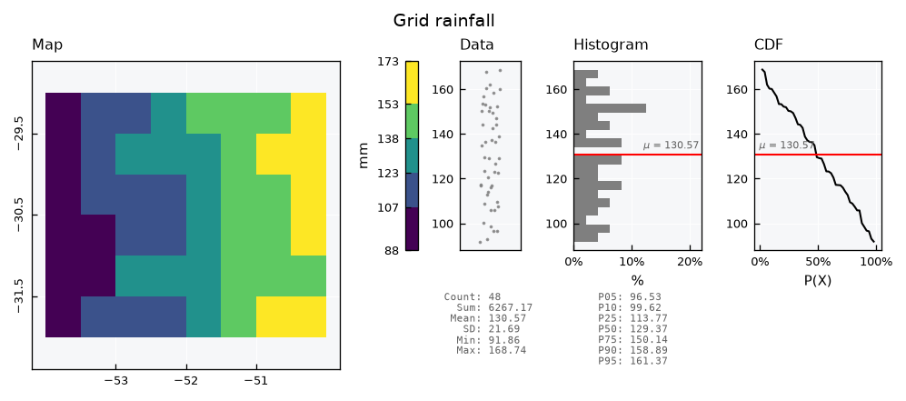
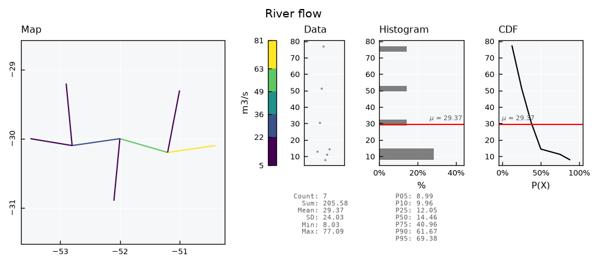
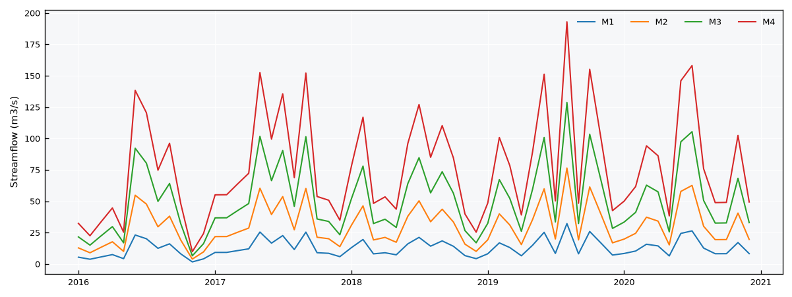

Databases - Spatial#
This tutorial covers the spatial databases of plans. Unlike SemiSpatialDB, they keep the geometries inside the database file, a GeoPackage, so records and places travel together and open in any GIS. There is one class per kind of geometry, each with its own layer and record key:
Class |
Layer |
Geometry |
Record key |
|---|---|---|---|
|
|
polygons |
|
|
|
lines |
|
|
|
points |
|
|
|
any, mixed |
|
The examples are a rainfall grid, a river network and a few weather stations.
See also
Check out the Databases - Station networks tutorial first.
Notebook setup#
For users running this tutorial as a Jupyter Notebook, this cell must be executed first:
import sys
import json
from pathlib import Path
import numpy as np
import pandas as pd
import matplotlib.pyplot as plt
import geopandas as gpd
from shapely.geometry import LineString, Point, box
# Install `plans` in `google.colab`.
# Use `pip install plans` for other environments.
if "google.colab" in sys.modules:
import os
os.system(f"{sys.executable} -m pip install -q plans")
from plans.databases import ZonesDB, PathsDB, SitesDB, SpatialDB
from plans.datasets.analyst import GeoUnivar
# This avoids warnings related to uninstalled fonts
import logging
# Set the matplotlib font manager logger to only show errors (hides warnings)
logging.getLogger('matplotlib.font_manager').setLevel(logging.ERROR)
# define output folder
OUTPUT_DIR = Path("outputs/databases")
OUTPUT_DIR.mkdir(parents=True, exist_ok=True)
print(f"Outputs will be saved to: ./{OUTPUT_DIR}")
Outputs will be saved to: ./outputs/databases
All examples use monthly data from 2016 to 2020, and the same helper to write a specs file:
rng = np.random.default_rng(seed=3) # ensure reproducibility
dates = pd.date_range(start="2016-01-01", end="2020-12-01", freq="MS")
season = np.cos(2 * np.pi * (dates.month - 1) / 12)
def write_specs(file_specs, specs):
# each spec is (name, abstract, variable, statistic, source, extent)
rows = [
{
"name": name,
"abstract": abstract,
"method": "synthetic",
"timestep": "1M",
"extent": extent,
"scale": 1,
"offset": 0,
"start": "2016-01-01",
"end": None,
"variable_name": variable,
"statistic_name": statistic,
"source_name": source,
}
for name, abstract, variable, statistic, source, extent in specs
]
file_specs.write_text(json.dumps(rows, indent=2), encoding="utf-8")
return file_specs
Zones: a rainfall grid#
Gridded products, such as satellite rainfall, are polygons in a regular grid. Lets make an 8 by 6 grid of half-degree cells. The layer needs a unique name for each zone; an integer id, when given, is kept as the key of the zone:
cells = []
for row in range(6):
for col in range(8):
x0, y0 = -54.0 + 0.5 * col, -29.0 - 0.5 * (row + 1)
cells.append({"id": 1 + row * 8 + col, "name": f"R{row + 1}C{col + 1}", "geometry": box(x0, y0, x0 + 0.5, y0 + 0.5)})
grid = gpd.GeoDataFrame(data=cells, crs="EPSG:4674")
file_grid = OUTPUT_DIR / "grid.gpkg"
grid.to_file(filename=file_grid, layer="grid", driver="GPKG")
grid.head()
| id | name | geometry | |
|---|---|---|---|
| 0 | 1 | R1C1 | POLYGON ((-53.5 -29.5, -53.5 -29, -54 -29, -54... |
| 1 | 2 | R1C2 | POLYGON ((-53 -29.5, -53 -29, -53.5 -29, -53.5... |
| 2 | 3 | R1C3 | POLYGON ((-52.5 -29.5, -52.5 -29, -53 -29, -53... |
| 3 | 4 | R1C4 | POLYGON ((-52 -29.5, -52 -29, -52.5 -29, -52.5... |
| 4 | 5 | R1C5 | POLYGON ((-51.5 -29.5, -51.5 -29, -52 -29, -52... |
A spatial database is created from the usual setup plus a [spatial] section, with the source file of the geometries and, if the file has several, the layer. The database must be a .gpkg file:
file_specs = write_specs(
file_specs=OUTPUT_DIR / "grid_specs.json",
specs=[("PPT_MONTHLY_GRID", "Monthly rainfall per grid cell", "precipitation", "sum", "CHIRPS v2.0", "cell")],
)
zdb = ZonesDB(name="Grid")
zdb.new(
config={
"database": {"path": str(OUTPUT_DIR / "grid_db.gpkg")},
"specs": {"path": str(file_specs)},
"spatial": {"file": str(file_grid), "layer": "grid"},
},
overwrite=True,
)
print(zdb.inspect_schema(table="records", quiet=True))
[Grid]
records (0 rows)
id INTEGER
inserted INTEGER
datetime INTEGER
value REAL
flag_value INTEGER
spec_id INTEGER
zone_id INTEGER
Rainfall grows to the east. Records can name their zone with zone_name instead of zone_id; the database resolves it, and refuses names it does not know:
frames = []
for cell in grid.itertuples():
east = cell.geometry.centroid.x + 54.0 # 0 to 4 degrees
mean_ppt = (90 + 20 * east) * (1 - 0.3 * season)
frames.append(pd.DataFrame({"datetime": dates, "value": rng.gamma(shape=6, scale=mean_ppt / 6), "zone_name": cell.name}))
df = pd.concat(frames, ignore_index=True)
zdb.insert_records(dataframe=df, spec_name="PPT_MONTHLY_GRID", flag=1)
zdb.query_records(query_dict={"zone_name": ["R1C1", "R1C8"], "start": "2016-01-01", "end": "2016-02-01"})[["datetime", "value", "zone_id"]]
| datetime | value | zone_id | |
|---|---|---|---|
| 0 | 2016-01-01 00:00:00+00:00 | 133.506982 | 1 |
| 1 | 2016-02-01 00:00:00+00:00 | 78.772256 | 1 |
| 2 | 2016-01-01 00:00:00+00:00 | 53.506193 | 8 |
| 3 | 2016-02-01 00:00:00+00:00 | 44.953056 | 8 |
The geometries come back with .get_features(), with id as the first column. It matches zone_id in the records, so a mean per zone joins straight to its cell:
df = zdb.query_records(query_dict={"spec_name": "PPT_MONTHLY_GRID"})
mean_monthly = df.groupby("zone_id")["value"].mean().rename("ppt_mean")
zones = zdb.get_features().merge(mean_monthly, left_on="id", right_index=True)
gv = GeoUnivar(name="Grid rainfall", alias="PPT")
gv.varname = "Mean monthly rainfall"
gv.units = "mm"
gv.set_data(input_df=zones, input_varfield="ppt_mean")
gv.view()

zdb.close()
Paths: a river network#
Lines hold data that flows along them, such as streamflow in a river. Lets build a small network: a main river in four reaches, from west to east, and three tributaries. Each reach has the drainage area at its downstream end:
nodes = {
"a": (-53.5, -30.0), "b": (-52.8, -30.1), "c": (-52.0, -30.0), "d": (-51.2, -30.2), "outlet": (-50.4, -30.1),
"t1": (-52.9, -29.2), "t2": (-52.1, -30.9), "t3": (-51.0, -29.3),
}
reaches = [
("M1", "a", "b", 800), ("M2", "b", "c", 1900), ("M3", "c", "d", 3200), ("M4", "d", "outlet", 4800),
("T1", "t1", "b", 500), ("T2", "t2", "c", 700), ("T3", "t3", "d", 900),
]
rivers = gpd.GeoDataFrame(
data={
"name": [r[0] for r in reaches],
"area_km2": [r[3] for r in reaches],
"geometry": [LineString([nodes[r[1]], nodes[r[2]]]) for r in reaches],
},
crs="EPSG:4674",
)
file_rivers = OUTPUT_DIR / "rivers.gpkg"
rivers.to_file(filename=file_rivers, driver="GPKG")
rivers
| name | area_km2 | geometry | |
|---|---|---|---|
| 0 | M1 | 800 | LINESTRING (-53.5 -30, -52.8 -30.1) |
| 1 | M2 | 1900 | LINESTRING (-52.8 -30.1, -52 -30) |
| 2 | M3 | 3200 | LINESTRING (-52 -30, -51.2 -30.2) |
| 3 | M4 | 4800 | LINESTRING (-51.2 -30.2, -50.4 -30.1) |
| 4 | T1 | 500 | LINESTRING (-52.9 -29.2, -52.8 -30.1) |
| 5 | T2 | 700 | LINESTRING (-52.1 -30.9, -52 -30) |
| 6 | T3 | 900 | LINESTRING (-51 -29.3, -51.2 -30.2) |
Monthly streamflow is the drainage area times a runoff depth, converted to cubic meters per second. Runoff shares one noise for the whole network, so wet months are wet everywhere:
file_specs = write_specs(
file_specs=OUTPUT_DIR / "rivers_specs.json",
specs=[("Q_MONTHLY", "Monthly mean streamflow per reach", "standard streamflow", "mean", "ANA", "reach")],
)
pdb = PathsDB(name="Rivers")
pdb.new(
config={
"database": {"path": str(OUTPUT_DIR / "rivers_db.gpkg")},
"specs": {"path": str(file_specs)},
"spatial": {"file": str(file_rivers)},
},
overwrite=True,
)
runoff_mm = 40 * (1 - 0.4 * season) * rng.gamma(shape=5, scale=0.2, size=len(dates))
seconds = dates.days_in_month * 86400
frames = []
for reach in rivers.itertuples():
flow = reach.area_km2 * 1e6 * runoff_mm / 1000 / seconds
frames.append(pd.DataFrame({"datetime": dates, "value": flow, "path_name": reach.name}))
pdb.insert_records(dataframe=pd.concat(frames, ignore_index=True), spec_name="Q_MONTHLY", flag=1)
Lines go through GeoUnivar too. For lines, the edge color is the line color, so the edgecolor_map key must be None to let the color map paint them. Flow grows downstream:
df = pdb.query_records(query_dict={"spec_name": "Q_MONTHLY"})
mean_flow = df.groupby("path_id")["value"].mean().rename("q_mean")
paths = pdb.get_features().merge(mean_flow, left_on="id", right_index=True)
gv = GeoUnivar(name="River flow", alias="Q")
gv.varname = "Mean streamflow"
gv.units = "m3/s"
gv.set_data(input_df=paths, input_varfield="q_mean")
gv.view_specs["edgecolor_map"] = None
gv.view()

In wide format, the reaches of the main river show the flow building up along the way:
wide = pdb.query_records(query_dict={"path_name": ["M1", "M2", "M3", "M4"], "wide": True})
names = pdb.get_features().set_index("id")["name"]
fig, ax = plt.subplots(figsize=(8, 3))
for (spec, path_id), series in wide.items():
ax.plot(series.index, series.values, lw=1, label=names[path_id])
ax.set_ylabel("Streamflow (m3/s)")
ax.legend(ncols=4, frameon=False)
plt.tight_layout()
plt.show()

pdb.close()
Sites: weather stations#
Points are sites, such as weather stations. The layer only accepts points; any other geometry is refused:
stations = gpd.GeoDataFrame(
data={"name": ["Coast", "Valley", "Plateau"]},
geometry=gpd.points_from_xy(x=[-50.5, -52.0, -53.2], y=[-30.2, -30.0, -28.9]),
crs="EPSG:4674",
)
file_stations = OUTPUT_DIR / "sites.gpkg"
stations.to_file(filename=file_stations, driver="GPKG")
file_specs = write_specs(
file_specs=OUTPUT_DIR / "sites_specs.json",
specs=[("TAS_MONTHLY", "Monthly mean air temperature", "surface air temperature", "mean", "INMET", "station")],
)
sdb = SitesDB(name="Stations")
sdb.new(
config={
"database": {"path": str(OUTPUT_DIR / "sites_db.gpkg")},
"specs": {"path": str(file_specs)},
"spatial": {"file": str(file_stations)},
},
overwrite=True,
)
try:
sdb.insert_features(gdf=grid.head(1)[["name", "geometry"]])
except ValueError as error:
print(error)
Geometry type(s) ['Polygon'] not accepted in sites. Valid: ['Point']
Networks grow. The .insert_features() method adds sites later. Here, a new station comes in UTM coordinates; it is reprojected to the CRS of the layer, and gets the next id:
new_station = gpd.GeoDataFrame(
data={"name": ["Ridge"]},
geometry=gpd.points_from_xy(x=[450000], y=[6720000]),
crs="EPSG:31982", # SIRGAS 2000 / UTM zone 22S
)
sdb.insert_features(gdf=new_station)
sdb.get_features()
| id | name | geometry | |
|---|---|---|---|
| 0 | 1 | Coast | POINT (-50.5 -30.2) |
| 1 | 2 | Valley | POINT (-52 -30) |
| 2 | 3 | Plateau | POINT (-53.2 -28.9) |
| 3 | 4 | Ridge | POINT (-51.5166 -29.64896) |
Records of all four stations, named by site_name:
frames = []
for name, base in {"Coast": 20, "Valley": 19, "Plateau": 15, "Ridge": 13}.items():
tas = base + 5 * season + rng.normal(scale=0.8, size=len(dates))
frames.append(pd.DataFrame({"datetime": dates, "value": tas, "site_name": name}))
sdb.insert_records(dataframe=pd.concat(frames, ignore_index=True), spec_name="TAS_MONTHLY", flag=1)
wide = sdb.query_records(query_dict={"wide": True})
wide.columns = sdb.get_features().set_index("id").loc[wide.columns.get_level_values("site_id"), "name"]
wide.head()
| name | Coast | Valley | Plateau | Ridge |
|---|---|---|---|---|
| datetime | ||||
| 2016-01-01 00:00:00+00:00 | 24.976864 | 23.332622 | 18.968884 | 17.892839 |
| 2016-02-01 00:00:00+00:00 | 23.473974 | 24.967774 | 17.426581 | 16.786563 |
| 2016-03-01 00:00:00+00:00 | 23.183442 | 21.683340 | 17.036439 | 13.836584 |
| 2016-04-01 00:00:00+00:00 | 19.535946 | 19.460948 | 15.170996 | 13.308316 |
| 2016-05-01 00:00:00+00:00 | 16.673713 | 17.376706 | 11.503583 | 10.844654 |
sdb.close()
Note
FieldDB is a SitesDB meant for in situ measurements, such as a climate station network. It works the same way for now. For samples analysed in a laboratory, see the Databases - Laboratory tutorial.
Any geometry: SpatialDB#
When places of different kinds share one database, SpatialDB takes any geometry in a single features layer. Here, a catchment, its outlet and its main river:
features = gpd.GeoDataFrame(
data={"name": ["Catchment", "Outlet", "Main river"]},
geometry=[
box(-53.6, -31.0, -50.3, -29.1),
Point(nodes["outlet"]),
LineString([nodes[k] for k in ("a", "b", "c", "d", "outlet")]),
],
crs="EPSG:4674",
)
file_features = OUTPUT_DIR / "features.gpkg"
features.to_file(filename=file_features, driver="GPKG")
file_specs = write_specs(
file_specs=OUTPUT_DIR / "features_specs.json",
specs=[("PPT_MONTHLY_AREAL", "Monthly areal rainfall", "precipitation", "sum", "CHIRPS v2.0", "catchment")],
)
fdb = SpatialDB(name="Catchment")
fdb.new(
config={
"database": {"path": str(OUTPUT_DIR / "features_db.gpkg")},
"specs": {"path": str(file_specs)},
"spatial": {"file": str(file_features)},
},
overwrite=True,
)
fdb.get_features()[["id", "name"]].assign(geometry_type=fdb.get_features().geom_type)
| id | name | geometry_type | |
|---|---|---|---|
| 0 | 1 | Catchment | Polygon |
| 1 | 2 | Outlet | Point |
| 2 | 3 | Main river | LineString |
Records point to a feature by feature_id or feature_name:
areal = pd.DataFrame({"datetime": dates, "value": rng.gamma(shape=6, scale=20, size=len(dates)), "feature_name": "Catchment"})
fdb.insert_records(dataframe=areal, spec_name="PPT_MONTHLY_AREAL", flag=1)
fdb.query_records(query_dict={"feature_name": "Catchment"})[["datetime", "value", "feature_id"]].head()
| datetime | value | feature_id | |
|---|---|---|---|
| 0 | 2016-01-01 00:00:00+00:00 | 113.001142 | 1 |
| 1 | 2016-02-01 00:00:00+00:00 | 164.920763 | 1 |
| 2 | 2016-03-01 00:00:00+00:00 | 99.281869 | 1 |
| 3 | 2016-04-01 00:00:00+00:00 | 373.389638 | 1 |
| 4 | 2016-05-01 00:00:00+00:00 | 155.809683 | 1 |
All the databases of this tutorial are GeoPackage files, so they open directly in QGIS, with the layer and every table of the database:
fdb.close()
gpd.list_layers(OUTPUT_DIR / "features_db.gpkg")
| name | geometry_type | |
|---|---|---|
| 0 | features | Unknown |
| 1 | variables | NaN |
| 2 | flags | NaN |
| 3 | sources | NaN |
| 4 | statistics | NaN |
| 5 | specs | NaN |
| 6 | records | NaN |